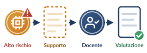

A · Per fascia d’età: il regime del consenso
Minori di 14 anni · primaria e sec. di I grado
- Soggetti vulnerabili: ogni trattamento legato all’IA richiede il consenso espresso di chi esercita la responsabilità genitoriale.
- De-identificazione tassativa dei prompt (D.M. 166/2025, par. 3.2): via nome, cognome, classe e riferimenti a disabilità o DSA (art. 9 GDPR).
Dai 14 anni · secondaria di II grado
- Lo studente ha la capacità autonoma di prestare il consenso al trattamento dei propri dati per l’uso dell’IA.
- A condizione di ricevere un’informativa trasparente, concisa e comprensibile (GDPR, artt. 13–14; D.M. 166/2025, par. 3.3, lett. c).
B · Per grado di scuola: rischio AI Act e natura della valutazione
Valutare con l’IA è «alto rischio»

La correzione fuori dalla classe rientra nella deroga per le attività preparatorie e di supporto solo se la valutazione finale è un atto umano esclusivo (human-in-the-loop: art. 14 AI Act; art. 22 GDPR; D.M. 166/2025, par. 3.1).
Primaria
Valutazione solo formativa e descrittiva.
L’IA aiuta soltanto a declinare i descrittori di livello delle rubriche e a suggerire stimoli formativi.
Secondaria di I grado
Valutazione formativa e sommativa.
L’IA aiuta a formulare correzioni analitiche e percorsi di recupero individualizzati.
Secondaria di II grado
Trasparenza dei contenuti generati da IA e tutela del diritto d’autore.
Il docente verifica che l’elaborato sia rielaborazione personale, non mera produzione algoritmica.